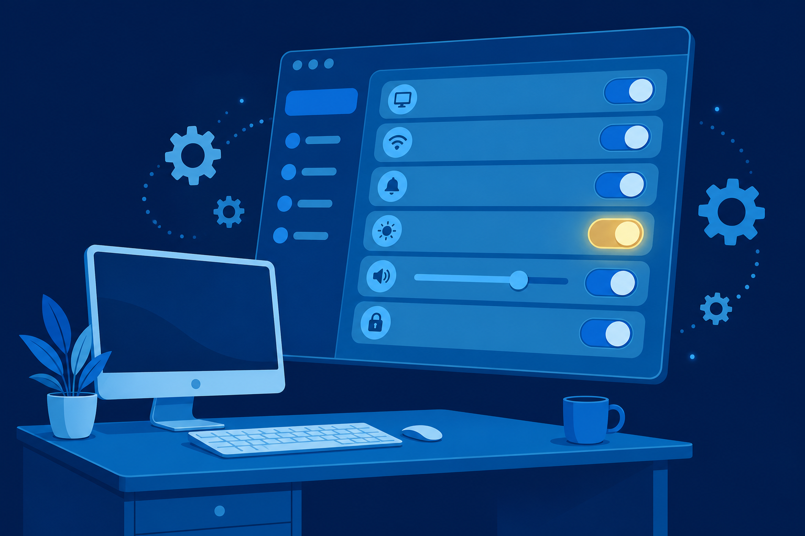
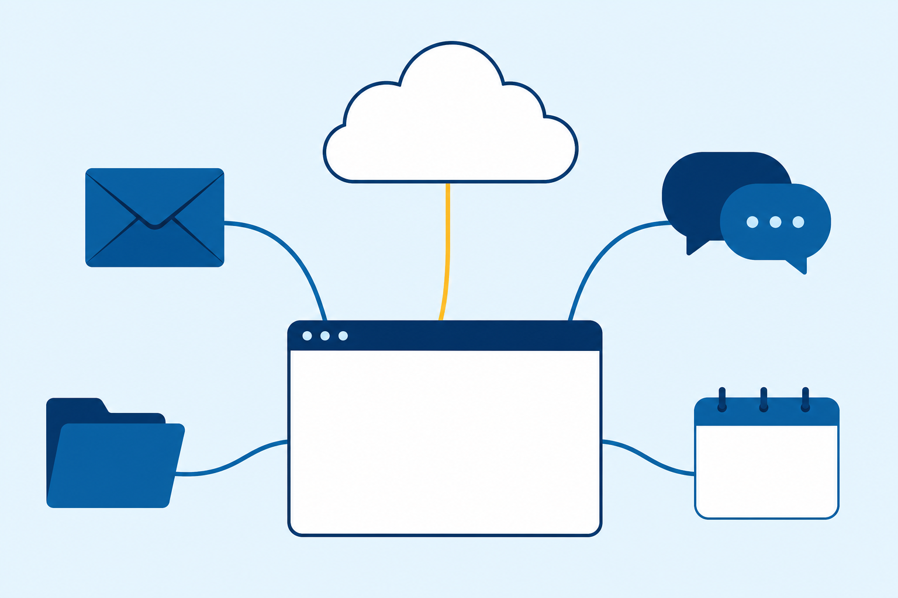

01
Configure
user settings: the account, privacy, desktop, and File Explorer views.

User settings, system settings, and the apps on top: one new hire’s workstation, configured end to end.
Start here: You unbox a new PC for a new coworker. What is the first setting you would change, and where would you find it?
user settings: the account, privacy, desktop, and File Explorer views.
system settings: updates, displays, power, apps, and the network.
applications that meet requirements, on the disk or in the cloud.
One workstation rides the whole class: an account, privacy choices, a desk that fits, two displays, a network drop, and the apps on top.
Every task maps to a settings pane.
Start sits at the bottom left.
Start sits in the center.
Taskbar search lives in both. When you cannot find a control, type its name.
Touch-enabled modern interface.
Legacy interface. Applets point to setting menus.
Same controls, different doors. The exam names a setting and asks where it lives, so learn both.
Data collection defaults to opt-in for Microsoft.
Turn sharing down and Windows gets less personal. The choice belongs to the user. You supply the map.
Windows 11 lists these under the Accessibility heading.
With a partner: J. Moreno wants to sign in on the lab PCs across campus, not just on PC-2412. Which account type does the setup sheet need, and what does the other type lack?
System files live under Windows, Program Files, and Users. System32 is the highlighted landmark.
All three off: the files administrators troubleshoot with become visible.
About answers the first troubleshooting question: what exactly is this machine?
Activation is where Windows 10 becomes 11, or Home becomes Pro: enter the new product key.
Both screens show the same desktop.
One desktop spreads across both screens.
Chosen for PC-2412With a partner: J. Moreno leaves open work on a laptop overnight, and the battery may die before morning. Which power state protects the work, and why?
Open:
compmgmt.msc
compmgmt.msc # Computer Management eventvwr.msc # Event Viewer services.msc # Services console taskschd.msc # Task Scheduler secpol.msc # Local Security Policy perfmon.msc # Performance Monitoring resmon.exe # Resource Monitor regedit.exe # Registry Editor cleanmgr.exe # Disk Cleanup dfrgui.exe # Defrag and Optimize Drives
More than one road reaches every tool. The exam expects you to know several.
Allow setup.exe to make changes to your device?
Minimums only get the app running. Run above them for optimum operation.

With a partner: J. Moreno and a teammate type in the same document at the same time, and each sees every change. What kind of app is this, and what makes that work?
Settings and Control Panel: which one is legacy, and what does it use to reach each menu?
Sleep against hibernate: which one survives a dead battery, and why?
Name the Run commands that open Event Viewer and Computer Management.
Next step: Run the CertMaster labs: Explore Windows Settings, Configure Windows Update, and Edit Power Options. Chapter 13 trades these panes for consoles and the command line.